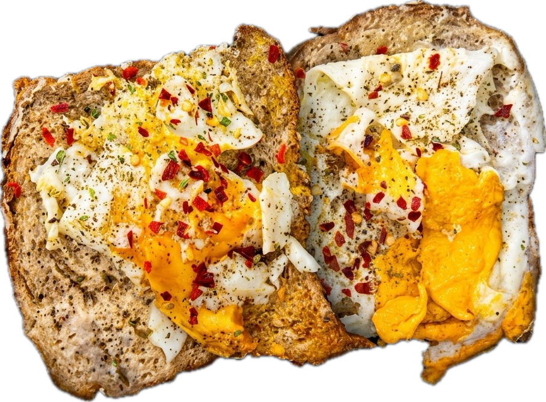

Step 01
The Bind
Heat a light layer of ghee. Crack two eggs side-by-side directly into the pan. Immediately place one slice of brown bread on top of each cooking egg so the whites bond to the bread.
Not a recipe. A repeatable process. Two eggs, brown bread, ghee, and a strict assembly order that hasn't changed in years.
See the build
A masterclass in texture. Ghee-toasted brown bread, open-faced egg fusion, tandoori mayo, a single slice of Amul cheese, and an asymmetric scattering of 3 jalapenos for dynamic heat distribution.

Every layer of the SSS sandwich is designed for maximum flavor distribution. This isn't just about throwing ingredients together; it's about the geometry of taste. As you scroll, witness the exact rotation of the open-faced masterclass.

Heat a light layer of ghee. Crack two eggs side-by-side directly into the pan. Immediately place one slice of brown bread on top of each cooking egg so the whites bond to the bread.
Once the lower half of the eggs are set, execute a seamless flip. The brown bread now faces the heat to achieve maximum crispness in the ghee, while the cooked eggs face upward, serving as a hot canvas.
Focus all toppings on ONE side only. Apply Tandoori mayo and center the Amul cheese slice. Place exactly 3 jalapeno slices on three corners. Deliberately leave the fourth corner empty to create a varied flavor profile per bite.
Dust the topped side with mixed herbs, chilli flakes, and Jamaican spice. The order builds a complex, smoky heat.
Check the bottom bread for a deep golden crisp. Fold the empty half over onto the topped half to seal the sandwich and melt the cheese. Cut diagonal.
This is a high-output build designed for sustained energy. The combination of complete proteins (eggs, cheese), slow-digesting complex carbohydrates (brown bread), and dense culinary fats (ghee, mayo) creates a massive, calculated caloric payload.